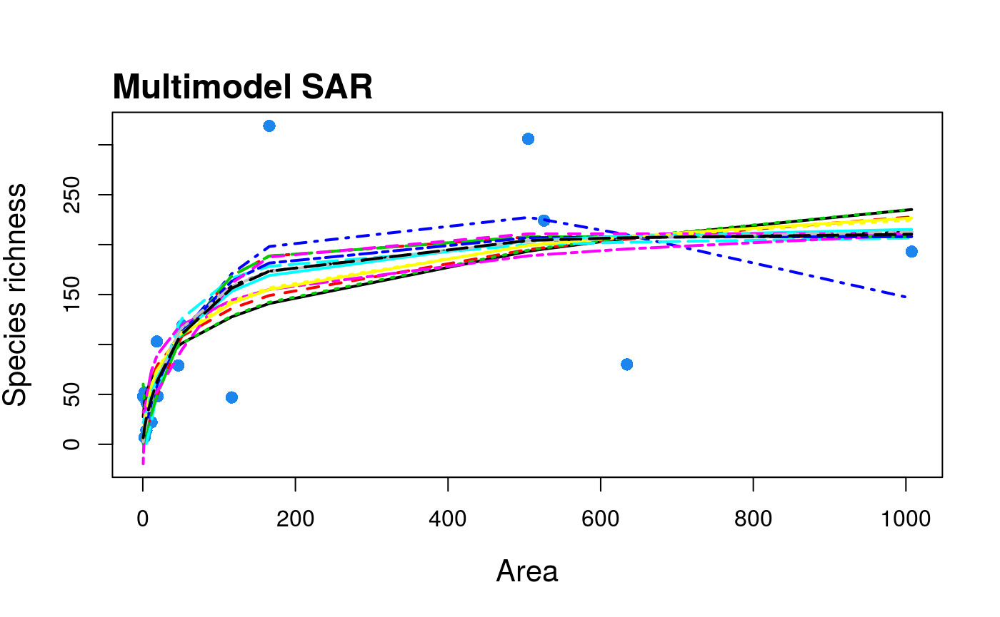

fit and compare Species-Area Relationship (SAR) models using multi-model inference
sars provides functionality to fit twenty SAR model using non-linear regression, and to calculate multi-model averaged curves using various information criteria. The software also provides easy to use functionality to plot multi-model SAR curves and to generate confidence intervals using bootstrapping. Additional SAR related functions include fitting the linear version of the power model and comparing parameters with the non-linear version, fitting the general dynamic model of island biogeography, and fitting the random placement model to a species abundance - site matrix.
As this is version 1.1.0 of the package, it is possible that there are some bugs in places. Please report any issues to us via GitHub.
The package has an associated vignette that provides examples of how to use the package.
A website for the package can be found here: https://txm676.github.io/sars/
Version 1.1.1 of the package has been archived on the Zenodo research data repository (DOI: 10.5281/zenodo.2573067).
Installation
You can install the released version of sars from CRAN with:
install.packages("sars")And the development version from GitHub with:
# install.packages("devtools")
devtools::install_github("txm676/sars")Example usage
Basic usage of sars will result in using two types of functions:
To fit the power sar model (Arrhenius 1921) to the ‘galapagos’ (Preston 1962) data set:
fit_pow <- sar_power(data = galap)Attempting to fit all 20 sar models to the ‘galapagos’ (Preston 1962) data set and get a multi-model SAR:
mm_galap <- sar_average(data = galap)
#>
#> Now attempting to fit the 20 SAR models:
#>
#> -- multi_sars --------------------------------------------------- multi-model SAR --
#> > power : v
#> > powerR : v
#> > epm1 : v
#> observed shape algorithm failed: observed shape set to
#> theoretical shape (sigmoid)
#> > epm2 : v
#> > p1 : v
#> > p2 : v
#> > loga : v
#> > koba : v
#> > mmf : v
#> > monod : v
#> > negexpo : v
#> > chapman : Warning: could not compute parameters statistics
#> > weibull3 : v
#> > asymp : v
#> > ratio : v
#> > gompertz : v
#> > weibull4 : v
#> > betap : v
#> > heleg : v
#> > linear : v
#>
#> Model fitting completed - all models succesfully fitted. Now undertaking model validation checks.
#> Additional models will be excluded if necessary:
#>
#> 4 models failed the residuals normality test and have been excluded from the multi SAR:
#> Extended Power model 1, Asymptotic regression, Cumulative Weibull 4 par., Linear model
#> 16 remaining models used to construct the multi SAR:
#> Power, PowerR, Extended Power model 2, Persistence function 1, Persistence function 2, Logarithmic, Kobayashi, MMF, Monod, Negative exponential, Chapman Richards, Cumulative Weibull 3 par., Rational function, Gompertz, Beta-P cumulative, Heleg(Logistic)
#> -------------------------------------------------------------------------------------Each of the ‘fitted’ objects have corresponding plot methods:
to fit the logarithmic SAR model (Gleason 1922) to the ‘galapagos’ data set and plot it

to fit a multimodel SAR curve to the ‘galapagos’ data set and plot it
mm_galap <- suppressMessages(sar_average(data = galap, verb = FALSE))
plot(mm_galap, pLeg = FALSE)
References
Arrhenius, Olof. 1921. “Species and Area.” The Journal of Ecology 9 (1). British Ecological Society: 95. doi:[10.2307/2255763](https://doi.org/10.2307/2255763).
Gleason, Henry Allan. 1922. “On the Relation Between Species and Area.” Ecology 3 (2). Ecological Society of America: 158–62. doi:[10.2307/1929150](https://doi.org/10.2307/1929150).
Preston, F. W. 1962. “The Canonical Distribution of Commonness and Rarity: Part I.” Ecology 43 (2). Ecological Society of America: 185. doi:[10.2307/1931976](https://doi.org/10.2307/1931976).